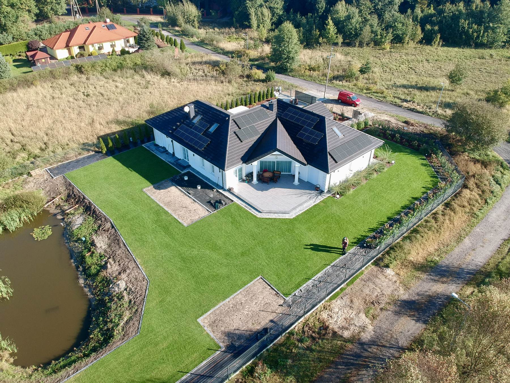
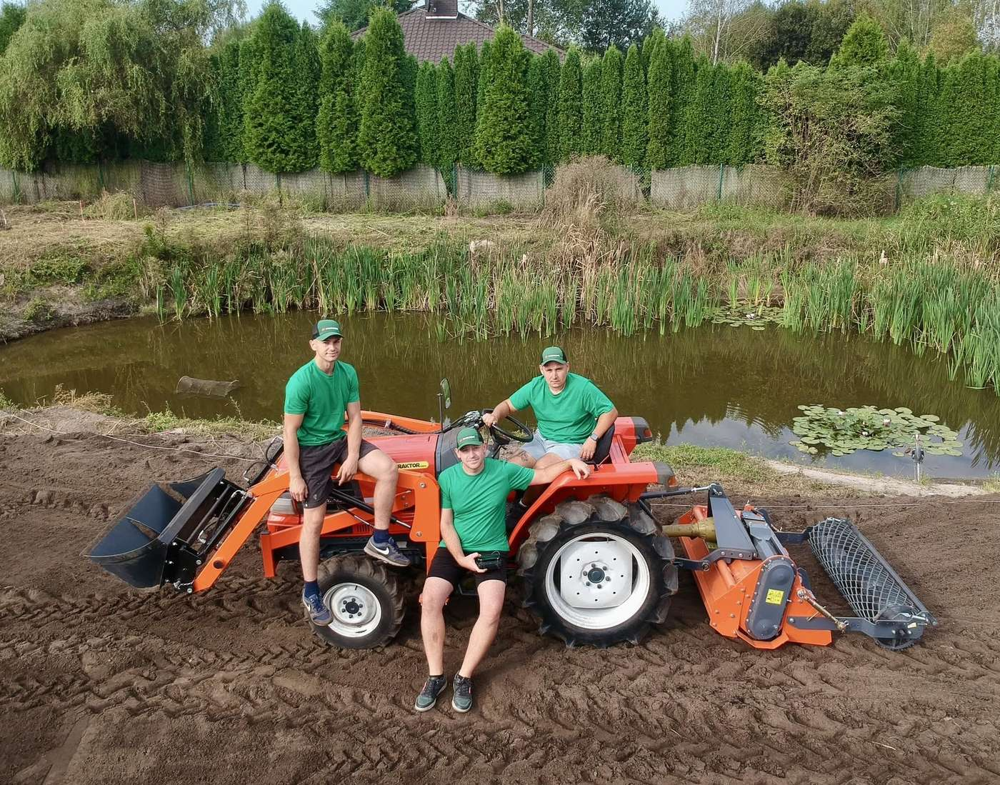

Ogród, o który nie musisz się martwić
Zakładamy trawniki z rolki, pielęgnujemy zieleń i nawadniamy ogrody w Tomaszowie Mazowieckim i okolicy.
Usługi
Pracujemy przy ogrodach przydomowych i większych terenach zielonych. Bierzemy zarówno pojedyncze prace, jak i stałą opiekę nad ogrodem przez cały sezon.
- Zakładanie trawników z rolki
- Przygotowanie i wyrównanie podłoża, rozłożenie darni, dowałowanie i pierwsze podlanie. Gotowy trawnik wygląda dobrze od pierwszego dnia.
- Pielęgnacja trawników
- Koszenie, wertykulacja, aeracja, nawożenie i dosiewanie. Jednorazowo albo w stałym rytmie przez sezon.
- Pielęgnacja roślin
- Cięcie żywopłotów, krzewów ozdobnych i bylin, nawożenie, ochrona przed chorobami i szkodnikami.
- Systemy automatycznego nawadniania
- Montaż i uruchomienie instalacji dobranej do kształtu i wielkości ogrodu, żeby podlewanie działało bez przypominania.
- Sadzenie drzew i krzewów
- Dobór gatunków do stanowiska i gleby, przygotowanie dołów, sadzenie i palikowanie.
- Drobne brukarstwo
- Ścieżki, obrzeża trawnika, opaski wokół budynku i niewielkie utwardzenia.
- Glebogryzarka separacyjna i kosiarka bijakowa
- Przygotowanie gruntu pod nowy trawnik oraz koszenie zarośniętych i zaniedbanych działek.

O nas
Jesteśmy zespołem trzech osób. Pracujemy razem przy każdym zleceniu, od przygotowania terenu po drobne prace wykończeniowe.
Do cięższych robót mamy własny sprzęt: glebogryzarkę separacyjną i kosiarkę bijakową. Bierzemy się też za działki zaniedbane i mocno zarośnięte.
Wycena
Każdy ogród wyceniamy osobno, bo ta sama usługa na dwóch działkach kosztuje inaczej. Zamiast sztywnego cennika wolimy krótką rozmowę i konkretną kwotę na Twój teren.
Co bierzemy pod uwagę
- Powierzchnia i ukształtowanie terenu. Płaski prostokąt liczy się inaczej niż skarpa.
- Zakres prac. Samo koszenie, cały nowy trawnik czy opieka przez sezon.
- Stan działki i dojazd. Ile trzeba przygotować przed właściwą robotą.
Wycena jest bezpłatna.
Opowiedz, co trzeba zrobić. Podamy cenę albo umówimy się na obejrzenie terenu.
Zadzwoń po wycenę517 960 219
Pracowaliśmy u Ciebie?
Dwa zdania od Ciebie znaczą dla nas więcej niż każda reklama. Kolejna osoba, która szuka ogrodnika w Tomaszowie, przeczyta je przed telefonem do nas.
Zajmuje mniej niż minutę.
Galeria
Nasze realizacje z Tomaszowa Mazowieckiego i okolicy.
Więcej zdjęć z bieżących prac publikujemy na Facebooku i Instagramie.
Kontakt
Godziny pracy
| Poniedziałek | 08:00 – 17:00 |
|---|---|
| Wtorek | 08:00 – 17:00 |
| Środa | 08:00 – 17:00 |
| Czwartek | 08:00 – 17:00 |
| Piątek | 08:00 – 17:00 |
| Sobota | 09:00 – 13:00 |
| Niedziela | Zamknięte |
Gdzie nas znaleźć
Usługi Ogrodnicze, Szymon IskierkaCisowa 7
97-200 Tomaszów Mazowiecki 517 960 219